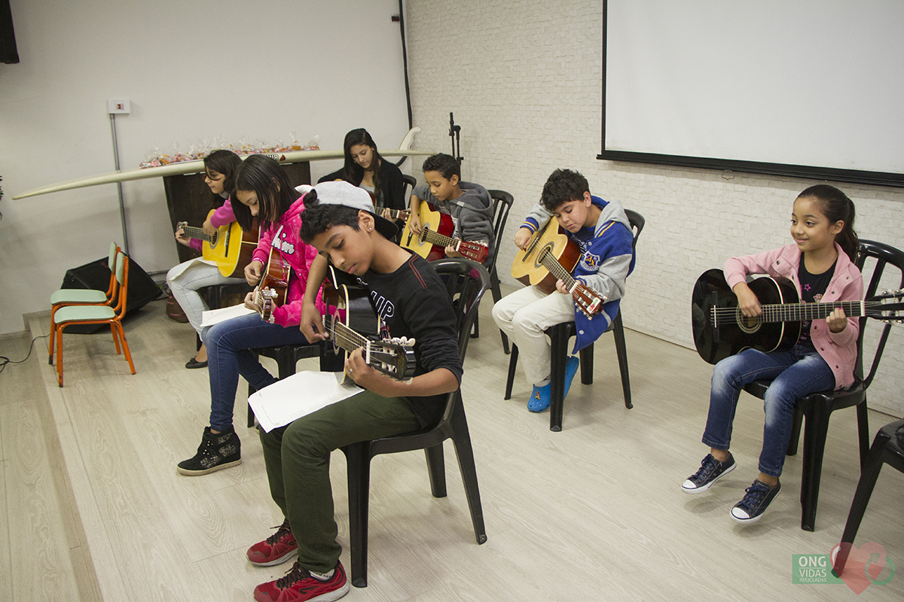

Acordes - Organização não governamental, sem fins lucrativos. Atua com famílias de baixa renda, no âmbito do desenvolvimento pessoal através da cultura e do aprendizado de instrumentos musicais.

Música é uma manifestação artística e cultural de um povo, em determinada época ou região. A música é um veículo usado para expressar os sentimentos e até mesmo o pensamento dos indivíduos.
Nós desenvolvemos oficinas de cordas, sopro e percursão, de forma a proporcionar inclusão social em bairros da periféria de São Paulo, para crianças e adolescentes, com a missão de proporcionar lazer, saúde, educação.